← 返回阅读库 · 原论文目录
论文讲解阅读文档 · 机器人学 · v120
The Dormant Neuron Phenomenon in Deep Reinforcement Learning[2302.12902]
视频时长 00:13:33；讲解文字 4,950 字符；提取讲解画面 14 张。按视频原顺序阅读，每段文字保留时间戳。
文字来自整段视频的自动语音转写，按自然停顿分段，并与 PPT / 论文页面 / 演示画面对齐。未将讲解压缩为摘要；术语、数字和口述公式请结合画面及原论文核对。 阅读稿已校正规范部分明确术语误识别；原始逐字稿和每处修改记录另行保留。
讲解画面为源视频截图（640×360），不是可编辑 PPT 文件。全片按每秒 2 帧扫描内容变化，逐步展开页保留；连续动画保留代表画面。清晰度受源视频限制。
下载完整资料包 · 含离线 HTML、PDF、Word、全部 PPT 画面和字幕。
原论文与材料
The Dormant Neuron Phenomenon in Deep Reinforcement Learning · 下载完整 PDF（24 页）
按时间阅读
00:00:00–00:00:27 · 画面 001
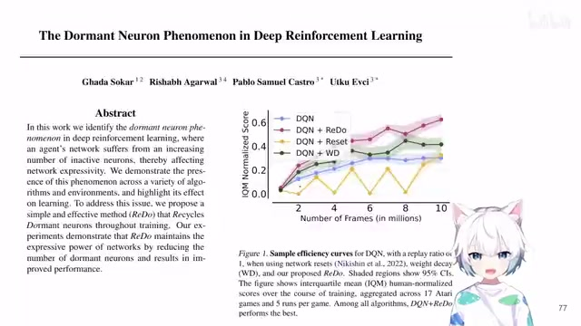
00:00:00–00:00:27 · 画面 001大家好,今天我们来快速水一篇论文 The Dormant Neuron Phenomenon in Deep Reinforcement Learning那这一篇呢就是研究了我们在这个做 DRL 的时候训练的这个网络它会如何的变化它会发生了哪些现象基于这样的一个现象一个详细的分析我们提出一个非常简单的改进让我们的网络呢能够更加有效的去表达我们当前的这个状态的信息来产生更好的这个 action 那么之前我们观察的现象呢在这篇文章里面已经提到了就是虽然我们不知道为什么
00:00:27–00:01:26 · 画面 002
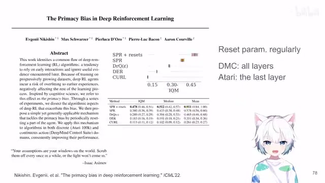
00:00:27–00:01:26 · 画面 002但是我们发现随着训练的进行隔一段时间只要我们把所有的这个网络网络里面的参数全部随机的初始化我就是重新初始化这个网络然后让他重新去训练重新去学习当然我的这个 replay buffer 肯定是保留的那么这样子之后呢我发现我的这个能够取得的结果取得的性能明显的比这个之前一直学下来的性能要高这是一个很有意思的观察虽然我们不知道为什么它能够得到这样的性能的提升但是我们确实通过这样的方法能够把性能给它提上来很有意思的一个观察那么本文就是在这个基础上更加详细的研究了说这个现象为什么产生所以这也是一个很有意思的解释的工作那么我们首先来看
00:01:26–00:03:12 · 画面 003
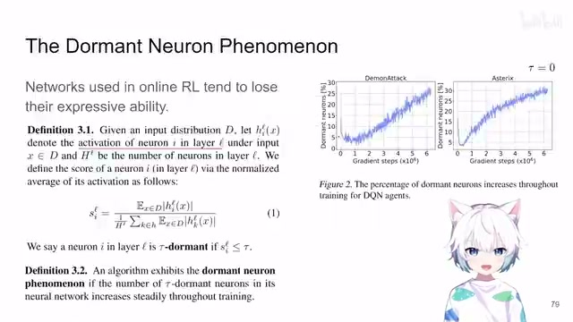
00:01:26–00:03:12 · 画面 003这里作者提出一个假说叫做 The Dormant Neuron Phenomenon就是说我们的一些神经元虽然在我们的网络里面但是实际上它的处于一个休眠的状态这里我们标记Activation of Neuron I in Layer L这就是说DL 层的第 I 个 Neuron它的输出是多少当然肯定是对应了一个 Input X那么他们就统计这一个神经元输出的这个绝对值它的期望除上这一层所有的神经元他们的输出的期望的和就是看它的绝对值的占比占所有的神经元的输出的占比有多少吗如果说这个 SIL
就是这个神经元输出的占比它是小于这个 Tau这是一个你给定的阈值。在当前这个阈值下。我认为这个神经元是休眠的那么在这个定义的基础上作者就发现了一个很神奇的现象就是我们在这个 Online reinforcement learning 里面使用到这个网络随着它的训练它的表达的能力就下降了具体来说就是它有越来越多的这个神经元处于休眠的状态就是它的输出对于下一层的影响就很小了几乎没有影响了只有个别少数的神经元在支撑着我们整个网络决策的进行我们来看到右边具体的图这里它取的 tau 等于 0 这是两个不同的环境随着你的训练的进行你的休眠的神经元的数量占所有神经元的数量它是稳步的逐步的在增加的
这是一个很有意思的观察，那么在这个基础上呢，作者又进行了更多详细的实验，比如说第一点就是什么导致了这种事情呢？发现首先第一点就是一个非静止的目标会加速这样的过程。那为了研究这个例子呢，作者拿到了这个监督学习的一个例子，这个在 CIFAR-10 上面我们。
00:03:12–00:04:43 · 画面 004
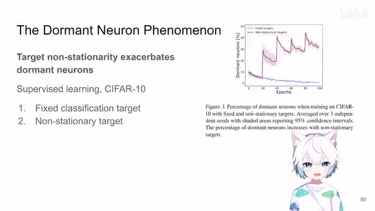
00:03:12–00:04:43 · 画面 004如果固定了就用这个数据集上原本的这个 classification label 就是一个确定的好学习的东西那么你看到呢休眠的神经元的数量呢是不断的下降的这是很好的我们希望看到的这样子我们的网络呢能够更好的去表达那与之形成对比的呢这里作者每隔一段时间就会把我们的 label 重新 shuffle 一次就是我给一个随机的 label 到这些样本上那你看到这个时候啊休眠的神经元它突然就会变多所以你的学习虽然它的比例会继续下降但是你看它这个休眠的神经元会逐渐的变多这也就意味着当你去不断的去更改你的训练的目标的时候最终你的网络它会有越来越多的神经元就摆烂了就躺那了它就不会参与这个过程了最终你的网络会只有越来越少的神经元在支持它的学习
那么为什么这是一个重要的观察呢因为你在做 DQN 的时候你想你的 target 是谁给的它也是另一个网络给的它也是在不断的移动不断的滚动不断的向前它正好符合这个非静止的目标的这样一个特点所以呢这个观察是有必要的
00:04:43–00:05:46 · 画面 005
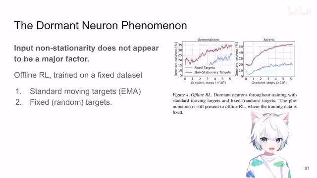
00:04:43–00:05:46 · 画面 005那么我们再来看这里作者第二个研究的是我们输入非静止的输入是不是影响我们的这个现象呢对这个现象有贡献呢答案是呢基本上是没有的这里呢作者用了一个这个是 offline reinforcement learning 这样的一个固定的数据集那么在这种情况下你的输入就是固定的了对吧那么我们这里做两种测试一种是这个 standard 的这个 moving average 就是 exponential moving average 它作为目标那种呢，就是固定好了，我也不是去更新这个 Qvalue 了，我就用一个固定的随机产生的这么一个固定的值去训练我的网络。你看到我们休眠的这个神经元的比例，当你使用一个移动的、不断更新的目标的时候，它休眠的神经元的比例还是增加的，那对比于这个固定的目标。所以呢，虽然我们使用的是相同的数据，同样的一个数据，但是呢，它的依然有这个 gap。
这个 gap 的产生，就是这个 target 不同的 target 导致的。那么这个呢，是第二个观察。那么第三个观察就是休眠的神经元呢，会依旧保持休眠。那么为了研究这个现象呢，作者把倒数第二层的这个神经元拿出来，那么他就对比在我更新前休眠的神经元这样一个集合和我更新之后休眠的神经元的这个集合，他们俩的这个 overlap 是多少，他的公式长这个样子，也是不断的增加的。
00:05:46–00:06:52 · 画面 006
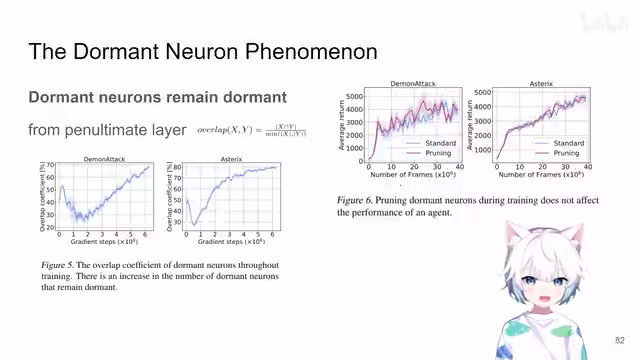
00:05:46–00:06:52 · 画面 006而且呢，增加的这个值是非常高的，那么说明呢，你在更新了权重之后，原来休眠的那些神经元呢还是在继续休眠。那么为了进一步验证说这些休眠的神经元它就是躺在那里了，它对性能就没有什么影响。那这里呢，作者做了一个剪枝的操作，就是把我的这些休眠的神经元全部摘除，摘除掉之后呢，我们发现它这个对于模型的性能呢，基本没有影响。对吧，原来是什么样子，拿掉这些神经元之后，优化掉这些神经元之后还是这个样子。那这也就进一步坐实了说，你这些休眠神经元对于我的这个网络，不能说是贡献巨大，只能说是一点用都没有。
那么然后，我们继续，究竟是什么导致我们有这样的这么多的休眠的神经元？作者发现我们的 gradient updates，也就是我对模型的参数更新的越多，就会导致我更多的休眠的神经元的出现。这里作者是试了不同的 replay ratioreplay ratio 就是说我在环境中走了一步，我的网络更新多少步。
00:06:52–00:07:37 · 画面 007
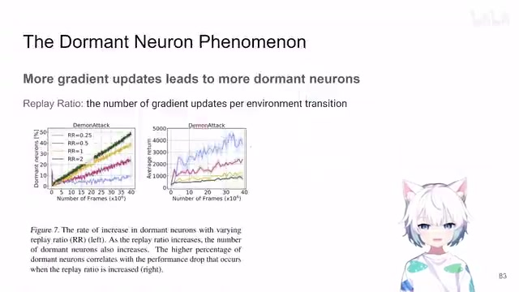
00:06:52–00:07:37 · 画面 007这个 ratio，你看到不同的这个比例，随着这个 replay ratio 的增加，你看到很明显的，对吧，休眠的神经元的数量就多起来了，或者说就是学的越多忘的越多，对吧。然后我又摸了摸镜子，而且呢，这个趋势有很好的跟这个 reward 对应的这样一个趋势。你可以看到休眠的神经元多了呢，它就是影响性的。那么最后的一个观察呢，就是我的这个休眠的神经元虽然它现在暂时的这个休眠了。
00:07:37–00:08:26 · 画面 008
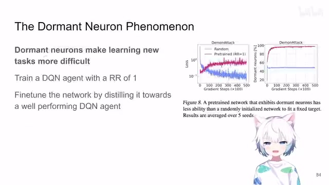
00:07:37–00:08:26 · 画面 008它是否对我们以后有更多的新的任务的时候会有更多的帮助呢？很不幸，答案是否定的。那这里呢，作者用了这个 Replay Ratio 1 train 了一个 DQN，然后呢，他做两个事情，一个就是用一个好的 DQN 去 fine-tune 去蒸馏这个 pretrained 的这个 DQN，然后呢，对比你去蒸馏一个随机初始化的这么一个 DQN，你发现你的这个蒸馏的 loss 对吧，这个 pretrained 的。
网络学不了一点，然后呢，随着你的蒸馏的进行，你的这个休眠的神经元的数量急剧的增加，这是这样的一个观察。好的，那么既然有了这样的一些观察之后，下面我们就要来看怎么来改进这个事情了。那么改进的方法呢，也很简单，就是必要的时候，当一个特定的时刻，我们意识到这个神经元它确实休眠了，我们想个办法给它重置一下，让它重新去初始化学点东西。
00:08:26–00:09:49 · 画面 009
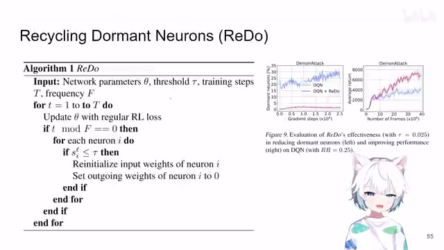
00:08:26–00:09:49 · 画面 009你看到它的做法也很直接，就是在你每更新 F 部之后，先看哪些神经元是休眠的，对于这些休眠的神经元来说，它会重新随机初始化它的输入。你输入进来的各个权重随机初始化，那初始化之后呢，为了不给我们这个网络添乱，当然毕竟你的本来的输出就是 0 了对吧？所以呢，在你的后续的这个网络后面的层里面控制对于当前这个神经元的输出的权重就是给它改成 0，那么这样操作呢，从输出的结果来看是没有变化的，但是你如果从。
这个梯度的传播的角度来看对吧，它的变化是很明显的，就像那个 control net 里面这个 zero convolution 一样对不对？那么这样子一个简单的改动之后呢，我们发现啊，效果拔群，首先我们明显的控制了这个休眠的神经元的数量，同时呢，在这个环境里面性能的提升强而有力，强而有力啊。那么。这个呢，就是本文的最核心的贡献，连同我们之前上面一系列详细的分析是一个很好的能够自圆其说的一个过程。那么我们来看一些具体的实验啊，这里作者测了 17 个 ALE，然后 26 个 Atari，这里这个 DQN 加上不同的网络结构 DRQ，这个我们之前也讲了，4 个 MuJoCo 配的这个 Soft Actor-Critic，那这里呢，关于这个 Replay Ratio 它的 ablation，这里呢，加上 N-Step Return，这是一系列的实验。
00:09:49–00:10:40 · 画面 010
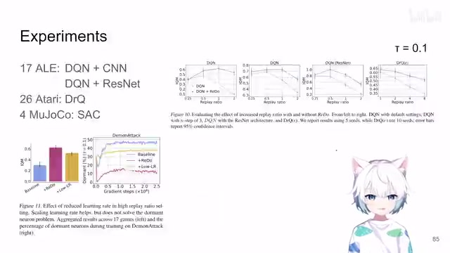
00:09:49–00:10:40 · 画面 010那么这里呢，作者还讨论了说，如果我想使用更大的这个 replay ratio，但是呢，我相应的减少我的 learning rate，这样达到的效果应该是理论上应该是一样的嘛，只不过你后面这个方法因为他的 learning rate 小，replay ratio 大，所以呢，他会有更多的这个 backpropagation，你要更新更多次的你的网络的权重，但是作者发现他确实性能不如我们。
用稍微大一点的 learning rate 而使用更小的这个更新的权重更好一点。那么这个呢，也是一个详细的观察。那再往下，这是另外一组实验，我们一个个来看。
00:10:40–00:12:05 · 画面 011
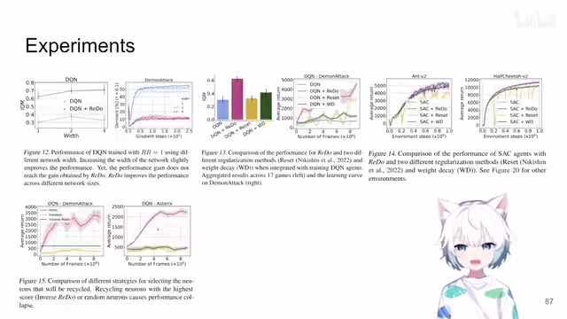
00:10:40–00:12:05 · 画面 011首先第一组就是，虽然我们有这么多神经元休眠了，我如果把我的网络扩大两倍，扩大四倍，扩大十倍甚至九倍，这个时候我神经元的数量也上去了，哪怕一部分比例的神经元休眠了，我是不是可以用剩下的活着的醒着的神经元继续来获得一个好的性能呢？答案是并没有这种好事。可以看到这一组实验，那么第二组呢，就是对比了，这也是他们封面的一个图，对比了这个本文原始的这个 DQN，本文的这个 Redo，之前说过的这个 Reset 加上这个 Weight Decay，应该就是这个 L2 作为正则项去惩罚你网络里面的权重。
这里呢，作者有结果，那么这边呢，是这个 Soft Actor-Critic 一样能够 work，那么这两组实验你可以明显看到，reset 之后网络性能会下去一点，因为大脑被清空了嘛，大脑重置了，然后呢，他会逐渐的学回来。这个是这两组实验。那么当然呢这个后面还讨论了说。我会我应该如何去选择。这样的这个神经元去重置。我是去重置这些休眠的神经元。
还是随机选一些神经元去重置。还是这个反向的去重置。就是我去谁谁比较活跃。我就重置谁还是这样子做你看到它的性能的差距。那么再往下呢
00:12:05–00:12:39 · 画面 012
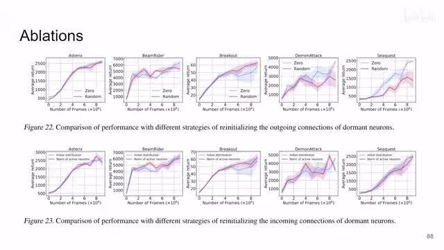
00:12:05–00:12:39 · 画面 012作者这里讨论了就是我们如何去 recycle如何去重置我们的这些休眠的神经元。对于它的输出来讲。是给它随机弄一个值。还是给它直接清零。那么下面这个讨论呢。是关于我这个神经元的输入的。就是我稍微放大一下我输入的权重。这样子我的输出不就也有了吗。那么具体的放大的方法呢。它用的是同一层的这些激活的神经元。比着人家的这个尺度来一下。
让它输出一下那这里呢你看到它的效果差不多。所以干脆随机初始化就得了。人家也不那么在乎。那么再往下呢
00:12:39–00:13:32 · 画面 013
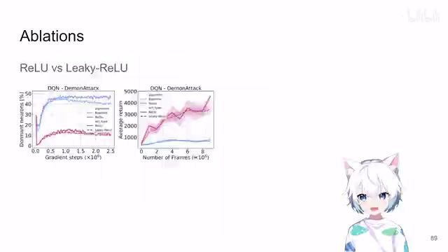
00:12:39–00:13:32 · 画面 013这里还有我们研究了说。relu 是不是导致这种现象产生的原因。换成 leaky relu 会怎么样对吧该有的还是有差别呢也在当然本文还有更多详细的 ablation，包括它具体的实验的配置都非常严谨的记录在正文里面附录里面，非常推荐感兴趣的朋友到原文查看。那么总的来说，这一篇一开始提出了休眠的神经元的这样一个假设，然后通过详细的实验去不断的给我们一个一个的观察，然后通过这一个一个的观察然后找出一个解决的方案，这个方案确实 work。
符合我们之前的一些假设逻辑上是能够自言其说同时呢它对于实验细节的记录也是相对比较严谨的是一个很有价值的工作好的那么以上就是我对这篇文章的一个非常快速的整理那么感谢您的收看请多多指点
00:13:32–00:13:33 · 画面 014
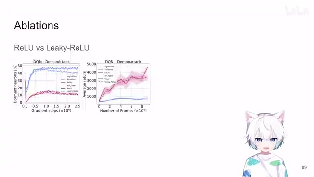
00:13:32–00:13:33 · 画面 014转写与来源说明 · 1 个自动复核提示
保留 109 个原始语音片段，1 个片段触发自动复核提示。提示仅用于定位可能的术语、重复或识别问题，不等于已确认错误。
讲解画面为源视频截图（640×360），不是可编辑 PPT 文件。全片按每秒 2 帧扫描内容变化，逐步展开页保留；连续动画保留代表画面。清晰度受源视频限制。
原视频：paper/合集_2026-10-16_机器人学/[论文简析]The Dormant Neuron Phenomenon in Deep Reinforcement Learning[2302.12902].mp4
SHA-256：d84a2788af6b4060b2674a2b2f366ef3207d0089a1c3715061f873eef15627b1
叫做 The Dormant Neuron Phenomenon
全文按视频语音与画面制作。原论文可从上方链接下载；完整资料包保留全文、原始逐字稿、字幕和校对记录。